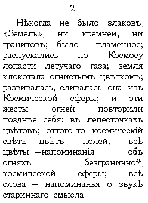
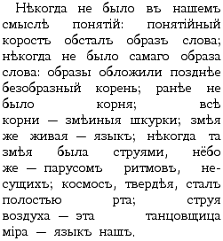
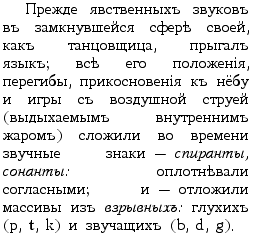

Glossolalia (Section 2)

Once upon a time there were no grasses, nor "Earths", nor flints, nor granites; it was -- flamy; laminae of flying gas diffused through the Cosmos; the earth was gurgling like a fiery flower; it was developing, confluing from the Cosmic sphere; and these gestures of the fires later duplicated themselves: in the petals of flowers; because of this the cosmic light is -- the colored flower of the fields; all flowers/colors are -- memories about the fires of the limitless, cosmic sphere; all words are -- memories of the sound of an ancient meaning.

Once upon a time there were no concepts in our sense: a conceptual crust surrounded the image of the word; once there was not even the image itself of the word; later the images surrounded the imageless root; previously there had been no root; all roots are -- serpent skins; the living serpent is -- the tongue; once that snake had been streams, the palate had been -- the sail of rhythms, carried along; the cosmos, as it firmed up, became the cavity of the mouth; a stream of air -- this dancer of the world is -- our tongue.

Before there were distinct sounds the tongue would leap, like a dancer, in its own enclosed sphere; all its positions, its twists and turns, touches of the palate and play with the stream of air (an exhalation of internal heat) composed in time signs of sound -- spirants, sonants: they condensed as the consonants; and -- they deposited massifs of plosives: the voiceless ones (p, t, k) and the voiced ones (b, d, g).